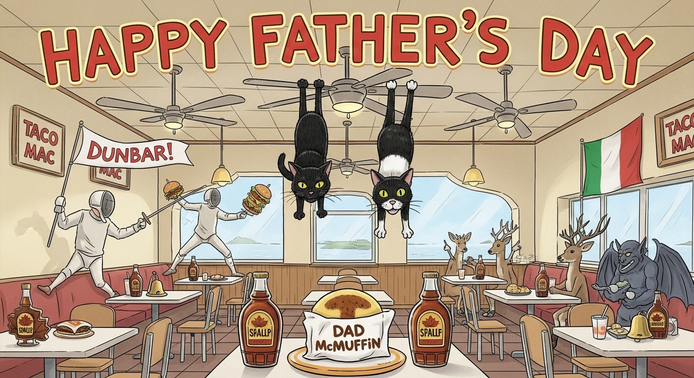

If you made it this far, there isn't any question - you have all the skills that make a true Dad. Thanks for being there for us all these years - I'll be practicing the Dad McMuffin to pass down to posterity. Happy Father's Day, Dad!